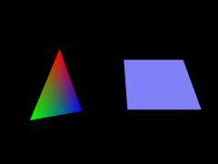

|
第04課 |
 |
|  |
旋轉:
在這一課裡，我將教會你如何旋轉三角形和四邊形。左圖中的三角形沿Y軸旋轉，四邊形沿著X軸旋轉。 |
|
 |
|
上一課中我教給您三角形和四邊形的著色。這一課我將教您如何將這些彩色對像繞著坐標軸旋轉。
其實只需在上節課的代碼上增加幾行就可以了。下面我將整個例程重寫一遍。方便您知道增加了什麼，修改了什麼。
我們增加兩個變量來控制這兩個對象的旋轉。這兩個變量加在程序的開始處其他變量的後面( bool fullscreen=TRUE;下面的兩行)。它們是浮點類型的變量，使得我們能夠非常精確地旋轉對象。浮點數包含小數位置，這意味著我們無需使用1、2、3...的角度。你會發現浮點數是OpenGL編程的基礎。新變量中叫做
rtri 的用來旋轉三角形， rquad 旋轉四邊形。 |
|
GLfloat rtri; // 用於三角形的角度
GLfloat rquad; // 用於四邊形的角度
|
接著我們修改DrawGLScene()的代碼。
下面這段代碼與上一課的相同。 |
|
int DrawGLScene(GLvoid) // 此過程中包括所有的繪製代碼
{
glClear(GL_COLOR_BUFFER_BIT | GL_DEPTH_BUFFER_BIT); // 清除屏幕及深度緩存
glLoadIdentity(); // 重置模型觀察矩陣
glTranslatef(-1.5f,0.0f,-6.0f); // 左移 1.5 單位，並移入屏幕 6.0
|
下一行代碼是新的。glRotatef(Angle,Xvector,Yvector,Zvector)負責讓對像繞某個軸旋轉。這個命令有很多用處。
Angle 通常是個變量代表對像轉過的角度。 Xvector , Yvector 和 Zvector 三個參數則共同決定旋轉軸的方向。比如(1,0,0)所描述的矢量經過X坐標軸的1個單位處並且方向向右。(-1,0,0)所描述的矢量經過X坐標軸的1個單位處，但方向向左。
D. Michael Traub:提供了對 Xvector , Yvector 和 Zvector 的上述解釋。
為了更好的理解X, Y 和 Z的旋轉，我舉些例子...
X軸－您正在使用一台台鋸。鋸片中心的軸從左至右擺放(就像OpenGL中的X軸)。尖利的鋸齒繞著X軸狂轉，看起來要麼向上轉，要麼向下轉。取決於鋸片開始轉時的方向。這與我們在OpenGL中繞著X軸旋轉什麼的情形是一樣的。(譯者註：這會兒您要把臉蛋湊向顯示器的話，保準被鋸開了花
^-^。)
Y軸－假設您正處於一個巨大的龍捲風中心，龍捲風的中心從地面指向天空(就像OpenGL中的Y軸)。垃圾和碎片圍著Y軸從左向右或是從右向左狂轉不止。這與我們在OpenGL中繞著Y軸旋轉什麼的情形是一樣的。
Z軸－您從正前方看著一颱風扇。風扇的中心正好朝著您(就像OpenGL中的Z軸)。風扇的葉片繞著Z軸順時針或逆時針狂轉。這與我們在OpenGL中繞著Z軸旋轉什麼的情形是一樣的。
下面的一行代碼中，如果rtri等於7，我們將三角形繞著Y軸從左向右旋轉7 。您也可以改變參數的值，讓三角形繞著X和Y軸同時旋轉。 |
|
glRotatef(rtri,0.0f,1.0f,0.0f); // 繞Y軸旋轉三角形
|
下面的代碼沒有變化。在屏幕的左面畫了一個彩色漸變三角形，並繞著Y軸從左向右旋轉。 |
|
glBegin(GL_TRIANGLES); // 繪製三角形
glColor3f(1.0f,0.0f,0.0f); // 設置當前色為紅色
glVertex3f( 0.0f, 1.0f, 0.0f); // 上頂點
glColor3f(0.0f,1.0f,0.0f); // 設置當前色為綠色
glVertex3f(-1.0f,-1.0f, 0.0f); // 左下
glColor3f(0.0f,0.0f,1.0f); // 設置當前色為藍色
glVertex3f( 1.0f,-1.0f, 0.0f); // 右下
glEnd(); // 三角形繪製結束
|
您會注意下面的代碼中我們增加了另一個glLoadIdentity()調用。目的是為了重置模型觀察矩陣。如果我們沒有重置，直接調用glTranslate的話，會出現意料之外的結果。因為坐標軸已經旋轉了，很可能沒有朝著您所希望的方向。所以我們本來想要左右移動對象的，就可能變成上下移動了，取決於您將坐標軸旋轉了多少角度。試試將glLoadIdentity()
註釋掉之後，會出現什麼結果。
重置模型觀察矩陣之後，X，Y，Z軸都以復位，我們調用glTranslate。您會注意到這次我們只向右一了1.5單位，而不是上節課的3.0單位。因為我們重置場景的時候，焦點又回到了場景的中心(0.0處)。這樣就只需向右移1.5單位就夠了。
當我們移到新位置後，繞X軸旋轉四邊形。正方形將上下轉動。 |
|
glLoadIdentity(); // 重置模型觀察矩陣
glTranslatef(1.5f,0.0f,-6.0f); // 右移1.5單位,並移入屏幕 6.0
glRotatef(rquad,1.0f,0.0f,0.0f); // 繞X軸旋轉四邊形
|
下一段代碼保持不變。在屏幕的右側畫一個藍色的正方形 |
|
glColor3f(0.5f,0.5f,1.0f); // 一次性將當前色設置為藍色
glBegin(GL_QUADS); // 繪製正方形
glVertex3f(-1.0f, 1.0f, 0.0f); // 左上
glVertex3f( 1.0f, 1.0f, 0.0f); // 右上
glVertex3f( 1.0f,-1.0f, 0.0f); // 左下
glVertex3f(-1.0f,-1.0f, 0.0f); // 右下
glEnd(); // 正方形繪製結束
|
下兩行是新增的。倘若把 rtri 和 rquad 想像為容器，那麼在程序的開始我們創建了容器(
GLfloat rtri , 和 GLfloat rquad )。當容器創建之後，裡面是空的。下面的第一行代碼是向容器中添加0.2。因此每次當我們運行完前面的代碼後，都會在這裡使
rtri 容器中的值增長0.2。後面一行將 rquad 容器中的值減少0.15。同樣每次當我們運行完前面的代碼後，都會在這裡使 rquad
容器中的值下跌0.15。下跌最終會導致對像旋轉的方向和增長的方向相反。
嘗試改變下面代碼中的+和-，來體會對像旋轉的方向是如何改變的。並試著將0.2改成1.0。這個數字越大，物體就轉的越快，這個數字越小，物體轉的就越慢。 |
|
rtri+=0.2f; // 增加三角形的旋轉變量
rquad-=0.15f; // 減少四邊形的旋轉變量
return TRUE; // 繼續運行
}
|
最後換掉窗口模式下的標題內容 |
|
// 重建 OpenGL 窗口
if (!CreateGLWindow("NeHe's 旋轉實例",640,480,16,fullscreen))
|
在這一課中，我試著盡量詳細的解釋如何讓對像繞某個軸轉動。改改代碼，試著讓對像繞著Z軸、X+Y軸或者所有三個軸來轉動:)。如果您有什麼意見或建議請給我EMAIL。如果您認為有什麼不對或可以改進，請告訴我。我想做最好的OpenGL教程並對您的反饋感興趣。
 |
版權與使用聲明:
我是個對學習和生活充滿激情的普通男孩,在網絡上我以DancingWind為暱稱，我的聯繫方式是zhouwei02@mails.tsinghua.edu.cn，如果你有任何問題，都可以聯繫我。
引子
網絡是一個共享的資源，但我在自己的學習生涯中浪費大量的時間去搜索可用的資料，在現實生活中花費了大量的金錢和時間在書店中尋找資料，於是我給自己起了個暱稱DancingWind，其意義是想風一樣從各個知識的站點中吸取成長的養料。在飄蕩了多年之後，我決定把自己收集的資料整理為一個統一的資源庫。
版權聲明
所有DancingWind發表的內容，大多都來自共享的資源，所以我沒有資格把它們據為己有，或聲稱自己為這些資源作出了一點貢獻。故任何人都可以複製，修改，重新發表，甚至以自己的名義發表，我都不會追究，但你在做以上事情的時候必須保證內容的完整性，給後來的人一個完整的教程。最後，任何人不能以這些資料的任何部分，謀取任何形式的報酬。
發展計劃
在國外，很多資料都是很多人花費幾年的時間慢慢積累起來的。如果任何人有興趣與別人共享你的知識，我很歡迎你與我聯繫，但你必須同意我上面的聲明。
感謝
感謝我的母親一直以來對我的支持和在生活上的照顧。
感謝我深愛的女友田芹，一直以來默默的在精神上和生活中對我的支持，她甚至把買衣服的錢都用來給我買書了，她真的是我見過的最好的女孩，希望我能帶給她幸福。
資源下載:
文檔 網頁格式
PDF格式
源碼 RAR格式 |
|
|